<!DOCTYPE html>
<html lang="es">
<head>
  <meta charset="UTF-8">
  <meta name="viewport" content="width=device-width, initial-scale=1">
  <title>Simulador de Tráfico</title>
  <link rel="stylesheet" href="styles.css">
</head>
<body>
  <div id="container">
    <!-- Panel lateral -->
    <aside id="sidebar">
      <h1>  Tráfico Urbano</h1>

      <nav class="menu">
        <button id="play-button">    Iniciar Simulación </button>
        <button id="stop-button">   Detener Simulación </button>
        <button id="reload-button">    Reiniciar Simulación </button>
        <button id="salir-button">    Salir </button>
        </nav>

        <nav class="menu">
        <h3>Tráfico en tiempo real</h3>

             <button id="high-button">
                  Congestión Alta    </button>
             

             <button id="medium-button">
                  Tráfico Moderado</button>
             

             <button id="low-button">
                  Tráfico Fluido</button>
      </nav>
    </aside>


    <!-- Panel superior y pie -->
    <main id="main-content">
      <div id="top-bar">
        <div class="input-section">
            <input type="text" id="instruction-input" placeholder="Escribe o di una instrucción..." />
            <button id="mic-button">
                 
            </button>

            <button id="send-button">
                      
                 </button>
             </div>

             </div>

        <!-- Canva para el mapa (falta ajustar) -->   

        
<div id="contenedor-mapas" style="width: 800px; height: 600px; margin: 5px auto; position: relative; border: 1px solid #ccc;">
  <canvas id="callesCanvas" width="800" height="600" style="position: absolute; left: 0; top: 0; z-index: 1;"></canvas>
  <canvas id="autosCanvas" width="800" height="600" style="position: absolute; left: 0; top: 0; z-index: 2;"></canvas>
</div>


      <footer id="bottom-info">
        <p><strong>Zona Seleccionada:</strong> </p>
        <p> Rutas alternas</p>
      </footer>
    </main>
  </div>
  <script src="app.js"></script> <!-- Funcionamiento de dibujo de calles -->
</body>
</html>
